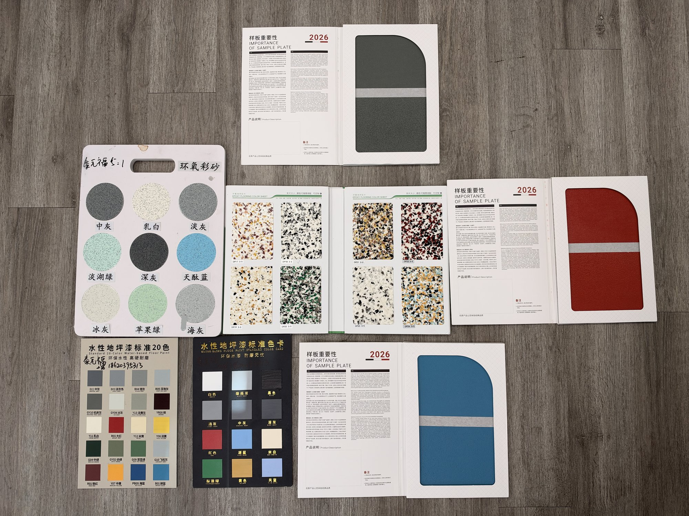
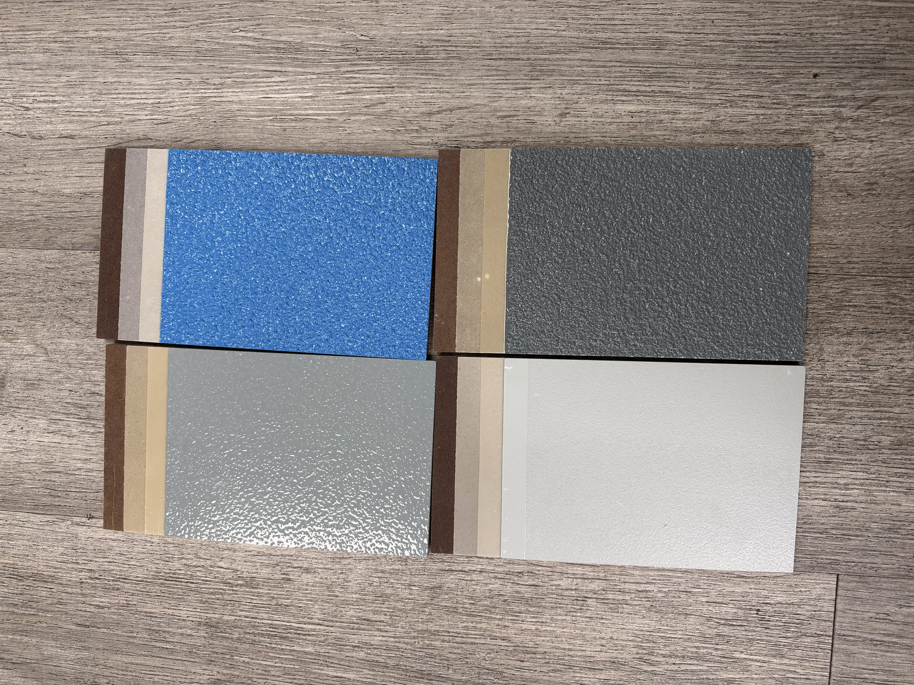

Real reference charts and physical samples for water-based floor coatings, epoxy flake (colored sand), solid colors, and textured finishes. Use these to shortlist options before requesting a project quote or physical sample.
Request a Quote or Physical SampleStandard water-based floor paint color chart (20 colors), epoxy colored-sand / flake options, multi-color flake books, and physical sample plates (2026).

Includes the standard 20-color solid chart, circular epoxy flake samples, open flake books, and solid color sample plates (blue, red, gray).
Popular decorative flake blends (环氧彩砂). These create a multi-tone, durable, slip-resistant surface ideal for garages, basements, commercial spaces, and showrooms.
Real application boards showing color + surface texture. Edges reveal the layered system (primer / base coats under the finish coat). Textured surfaces improve slip resistance for garages, workshops, and wet areas.

Top-left: Light blue-gray textured
Top-right: Bright blue textured
Bottom-left: Off-white / light gray (smoother)
Bottom-right: Medium gray textured
The standard 20-color water-based floor paint chart covers common industrial and commercial solids (reds, yellows, greens, blues, grays, black, white). Physical sample plates (blue, red, gray) demonstrate the finished look and importance of approving a sample before full application.
Solid colors are ideal for clean, modern, or high-visibility areas. Pair with a clear topcoat for extra durability and chemical resistance.
Tell us the space type (garage, basement, commercial, outdoor), approximate square footage, preferred style (solid / flake / textured), and any color preferences. We’ll recommend the best system and can ship a physical sample.
Get a Free Quote View Products